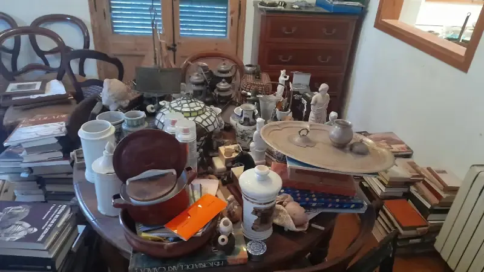

La primera pregunta de cualquier persona que necesita vaciar un piso es siempre la misma: ¿cuánto me va a costar? Y la respuesta honesta es que depende de demasiados factores para dar una cifra sin ver antes el piso. Pero eso no significa que no se pueda orientar.
Esta guía recoge precios reales del mercado de Barcelona, explica qué factores mueven el coste hacia arriba o hacia abajo, incluye una calculadora orientativa y da los criterios para evaluar si un presupuesto es razonable o si hay algo que no cuadra.
No hay estadísticas inventadas ni datos de estudios que no existen. Solo lo que sabemos de primera mano trabajando en este sector en el área metropolitana de Barcelona.
Rangos de precio reales para Barcelona en 2026
Los precios del vaciado de pisos en Barcelona oscilan habitualmente entre los 300€ para servicios muy básicos y los 4.500€ o más para casos complejos. La mayoría de los pisos estándar caen en la franja de 650€ a 2.200€, dependiendo del tamaño y del contenido.
Los siguientes rangos son orientativos y se basan en precios publicados por empresas del sector en Barcelona (Servicialia, TOP Mudanza, Barcelona1) y en nuestra propia experiencia operativa. En todos los casos, el presupuesto definitivo solo puede darse tras una visita al inmueble.
| Tamaño del piso | Contenido | Precio orientativo | Complejidad |
|---|---|---|---|
| Estudio / 30–50 m² | Mobiliario básico | 300€ – 650€ | Baja |
| Piso 70 m² / ~8 muebles | Amueblado normal | 350€ – 550€ | Baja |
| Piso 2 hab / 75–85 m² | Amueblado completo | 650€ – 1.100€ | Media |
| Piso 115 m² / ~22 muebles | Amueblado completo | 580€ – 880€ | Media |
| Piso 3–4 hab / 90–120 m² | Muy amueblado | 1.100€ – 2.200€ | Media-alta |
| Piso grande 155 m² / ~28 muebles | Amueblado completo | 950€ – 1.250€ | Media-alta |
| Piso grande / sin ascensor | Muy amueblado + sin ascensor | 1.500€ – 3.000€ | Alta |
| Caso con Síndrome de Diógenes | Acumulación severa | 2.500€ – 4.500€+ | Muy alta |
Fuentes: Barcelona1, Servicialia, TOP Mudanza, Habitissimo, y datos propios de VaciadoDePisos.cat. Los precios incluyen mano de obra, transporte y gestión de residuos en gestor autorizado por la Agència de Residus de Catalunya. Los rangos proceden de distintas fuentes y configuraciones de vivienda (número de muebles, acceso), por lo que no son estrictamente comparables solo por la superficie.
Dos pisos de 90m² pueden costar 900€ y 2.800€. La diferencia no es el tamaño: es el volumen de objetos, el acceso (planta, ascensor, distancia al camión), la presencia de elementos especiales y la urgencia. El m² es solo el punto de partida.
Calculadora orientativa: estime su precio antes de llamar
Esta calculadora usa factores reales del sector para dar una estimación orientativa. No sustituye a una visita —el presupuesto definitivo siempre requiere ver el piso en persona— pero le da una idea del rango antes de solicitar presupuestos.
Calculadora de precio vaciado
Rellene los campos y pulse calcular para obtener una estimación orientativa
Precio estimado orientativo
Rango probable del presupuesto real
Esta estimación es orientativa. El precio definitivo requiere visita gratuita al inmueble.
Confirmar presupuesto exacto: 688 30 41 43
Los factores que determinan el precio
Entender qué mueve el precio hacia arriba o hacia abajo es la mejor forma de prepararse para pedir un presupuesto y de evaluar si lo que le ofrecen es razonable.
Superficie y distribución
El tamaño del piso es el punto de partida, pero no el único factor. Un piso de 120m² con pocos muebles puede costar menos que uno de 70m² completamente amueblado. Lo que mide realmente el coste es el volumen de objetos a retirar, no los metros cuadrados.
Impacto medioVolumen y tipo de objetos
Es el factor más determinante del precio. Un piso con solo muebles básicos de madera cuesta mucho menos que uno con electrodomésticos, colchones, vajilla completa, ropa, libros y décadas de objetos acumulados. El volumen en m³ de residuos generados es lo que marca el coste de transporte y gestión.
Impacto muy altoAccesibilidad: ascensor y planta
La falta de ascensor puede incrementar el coste un 20% o más, dependiendo de la planta. Subir y bajar objetos pesados por escaleras estrechas requiere más tiempo, más operarios y más esfuerzo. En Barcelona, muchos edificios del Eixample, Gràcia o Ciutat Vella no tienen ascensor, lo que es un factor habitual en los presupuestos.
Impacto altoUbicación y acceso al edificio
En zonas como Ciutat Vella o el Eixample, las restricciones de carga y descarga, las calles estrechas y la dificultad de aparcar un camión afectan a la logística. Algunas comunidades de propietarios tienen normativas específicas sobre horarios o uso de montacargas. Todo esto se traduce en más tiempo y, por tanto, en más coste.
Impacto medio-altoElementos especiales
Algunos objetos tienen un coste de gestión muy superior al normal. El amianto requiere empresa especializada con autorización específica de la ARC. Los pianos o muebles muy pesados requieren medios especiales. Los electrodomésticos tienen tasas de vertedero diferenciadas. Estos elementos siempre se presupuestan aparte.
Impacto alto si aplicaUrgencia del servicio
Un vaciado programado con 10–15 días de antelación tiene el precio más ajustado. Los servicios urgentes en 3–7 días suelen tener un suplemento, y los servicios de 24–48 horas implican reorganizar agendas y pueden suponer un incremento notable. Si tiene margen de planificación, úselo.
Impacto medioEl factor que nadie menciona: el valor de reventa
Cuando el piso contiene muebles o objetos con valor de mercado suficiente, la empresa puede descontar ese valor del presupuesto o incluso ofrecer el servicio sin coste. Esto ocurre cuando hay mobiliario de calidad, antigüedades, colecciones, herramientas en buen estado o electrodomésticos recientes. No es la norma, pero vale la pena mencionarlo en la visita de valoración.
Ejemplos reales de presupuestos en Barcelona
Los siguientes casos ilustran cómo los factores anteriores se combinan en situaciones reales. Los precios son orientativos y representan rangos habituales en el mercado de Barcelona.
Estudio 40 m², 5ª planta sin ascensor
75 m², 2 dormitorios, 2ª planta con ascensor
95 m², 3 dormitorios, 4ª planta con ascensor
110 m², 4 dormitorios, 3ª planta sin ascensor
Qué debe incluir un presupuesto profesional
No todos los presupuestos son iguales. La diferencia entre un precio muy bajo y uno razonable está casi siempre en lo que no incluye el precio bajo. Estos son los elementos que debe contener cualquier presupuesto serio:
- Mano de obra completa: el trabajo del equipo desde el inicio hasta la entrega del piso vaciado, incluyendo desmontaje básico de muebles si es necesario.
- Transporte: carga, desplazamiento y descarga en punto de destino o planta de gestión de residuos autorizada.
- Gestión de residuos autorizada: entrega de los residuos en gestor registrado en la Agència de Residus de Catalunya. Sin esto, los residuos pueden acabar en un vertedero ilegal.
- Certificado de gestión: documento que acredita que los residuos han sido gestionados legalmente. Protege al propietario del inmueble.
- Precio cerrado: el importe acordado no debe variar salvo que aparezcan situaciones no visibles durante la visita previa (amianto oculto, elementos especiales no detectados).
- Limpieza final básica: algunos presupuestos la incluyen, otros la cobran aparte. Pregunte siempre qué nivel de limpieza queda incluido.
- Separación de elementos de valor: si hay objetos que quiere conservar o que podrían tener valor de reventa, esto debe acordarse en la visita previa.
- Señal de alarma: si el presupuesto no menciona gestión de residuos, no incluye certificado y el precio es significativamente menor al rango de mercado, los residuos probablemente no se gestionarán de forma legal.
Puede comprobar si una empresa está registrada como gestor o productor de residuos en el Registre de productors i gestors de residus de Catalunya, disponible en residus.gencat.cat. Pida el número de registro antes de contratar. Una empresa que no pueda facilitarlo no está operando dentro de la legalidad.

Cómo pedir un presupuesto y comparar correctamente
-
Prepare la información básica del piso
Antes de llamar o escribir, tenga a mano: la dirección, la planta, si hay ascensor, el número aproximado de habitaciones y una descripción general del contenido. Cuanta más información dé, más ajustada será la estimación inicial por teléfono.
-
Solicite visita de valoración gratuita
Cualquier empresa seria ofrece visita gratuita antes de presupuestar. Desconfíe de presupuestos dados únicamente por teléfono o por fotos: el precio real siempre depende de ver el piso en persona. La visita no le compromete a nada.
-
Pida el presupuesto por escrito y desglosado
El presupuesto debe incluir qué está incluido (mano de obra, transporte, gestión de residuos) y qué no. Desconfíe de los presupuestos verbales: si hay discrepancias después, no tendrá nada a lo que atenerse.
-
Compruebe la gestión de residuos
Pregunte explícitamente si el precio incluye gestión de residuos en empresa autorizada por la ARC y si se entrega certificado. Si la respuesta es evasiva o dicen que "lo llevan a un sitio cercano", es una señal de alerta.
-
Compare al menos 2–3 presupuestos
No compare solo el precio final: compare qué incluye cada presupuesto. Un precio un 30% más barato que la media puede significar que no incluye gestión de residuos legal, que el equipo es menor o que hay condicionantes que subirán el precio después.
-
Confirme por escrito las condiciones
Antes de iniciar el trabajo: precio final acordado, fecha y horario, qué pasa si aparecen elementos imprevistos, y si se entregará certificado de gestión de residuos al finalizar.
Qué hacer
- Solicitar visita presencial antes del presupuesto
- Pedir el presupuesto por escrito y desglosado
- Verificar que incluye certificado de gestión de residuos
- Separar objetos de valor antes de la visita
- Acordar por escrito qué pasa con imprevistos
- Comprobar el registro en la ARC si tiene dudas
- Planificar con antelación para evitar suplementos de urgencia
Qué no hacer
- Aceptar presupuesto solo por teléfono sin visita previa
- Contratar por el precio más bajo sin preguntar qué incluye
- Pagar por adelantado la totalidad del servicio
- Tirar objetos de valor antes de que la empresa los evalúe
- Ignorar si la empresa tiene certificación de gestión de residuos
- Contratar urgente si tiene margen de tiempo
- Dar por hecho que el precio es fijo sin confirmarlo por escrito
Situaciones especiales que cambian el precio
Vaciado por defunción o herencia
El vaciado por defunción o herencia no tiene un precio diferente al vaciado estándar, pero el proceso sí es distinto. Normalmente requiere mayor coordinación con los herederos, un protocolo de inventario más cuidadoso y mayor sensibilidad en el manejo de pertenencias personales. Si hay varios herederos, es conveniente que acuerden de antemano qué objetos quieren conservar antes de la visita de valoración.
Síndrome de Diógenes
Los vaciados de pisos con acumulación severa son los casos más complejos y más caros del sector. No se trata solo de más volumen: la presencia de materiales putrefactos, residuos biológicos o contaminación obliga a usar equipos de protección, tratamientos específicos y gestores de residuos con autorización para este tipo de materiales. Los precios pueden multiplicarse por 2 o 3 respecto a un vaciado estándar del mismo tamaño. Para estos casos, consulte también nuestra guía específica sobre limpieza del Síndrome de Diógenes.
Elementos con gestión especial: amianto
El amianto en el estado en que se encuentra en muchos edificios de Barcelona anteriores a 1980 (tejados ondulados, tuberías de fibrocemento, revestimientos de paredes) requiere una empresa con autorización específica de la Agència de Residus de Catalunya para gestionarlo. Si sospecha que el piso puede contener amianto, indíquelo antes de la visita. La retirada y gestión de amianto siempre tiene un coste adicional.
Vaciado con plazo muy corto
Los servicios urgentes de 24–48 horas son posibles pero implican reorganizar agendas completas. El suplemento es real y justificado. Si su situación no es realmente urgente (aunque lo parezca en el momento), ganar una semana de planificación puede ahorrarle un suplemento considerable.
VaciadoDePisos.cat: cómo trabajamos
Somos una empresa local con base en Sant Pere de Ribes y cobertura en toda el área metropolitana de Barcelona y el Garraf. Llevamos años realizando vaciados en todos los distritos de Barcelona y en los municipios del entorno: Sitges, Vilanova, Hospitalet, Badalona, Terrassa, Sabadell y más.
Nuestro proceso es sencillo y transparente:
Cómo es nuestro proceso
- Visita gratuita el mismo día o al siguiente — sin compromiso
- Presupuesto cerrado por escrito, detallado y sin letra pequeña
- Trabajo en 1–2 días para pisos estándar; urgente en 24–48h si es necesario
- Gestión de residuos en empresa autorizada por la ARC
- Certificado de gestión entregado al finalizar el trabajo
- Sin sorpresas: si aparece algo no previsto en la visita, lo comunicamos antes de actuar
Zona de cobertura
¿Necesita saber el precio exacto para su piso?
Visita gratuita el mismo día, presupuesto cerrado por escrito y certificado de gestión de residuos incluido. Sin compromisos, sin sorpresas.
Preguntas frecuentes
El coste varía según el tamaño y el contenido. Como orientación: un piso de 70m² con 8 muebles puede costar entre 350€ y 550€; uno de 115m² con 22 muebles entre 580€ y 880€; uno de 155m² con 28 muebles entre 950€ y 1.250€. Para pisos con mucho contenido, sin ascensor o con elementos especiales, el precio puede superar los 2.000€. El precio exacto siempre requiere visita previa gratuita.
Porque los criterios de cálculo son distintos y porque no todas incluyen lo mismo. Algunas cobran por horas, otras por m³ de residuos, otras hacen presupuesto cerrado. La diferencia más importante es si el precio incluye gestión legal de residuos con certificado de la ARC o no. Un precio muy bajo habitualmente significa que los residuos no se gestionarán de forma autorizada, lo que puede crear problemas legales para el propietario.
Los principales: falta de ascensor (+20% o más según la planta), volumen de objetos (el factor más determinante), elementos especiales como pianos, amianto o grandes electrodomésticos, la urgencia del servicio, y las restricciones de acceso propias de zonas como Ciutat Vella o el Eixample.
Debe incluirla. En Catalunya, la gestión de residuos debe realizarse a través de gestores autorizados por la Agència de Residus de Catalunya. Pregunte siempre si el presupuesto incluye el certificado de gestión de residuos. Una empresa seria siempre lo incluye y puede demostrar su registro en la ARC.
El vaciado puede ser gratuito o a precio reducido cuando el piso contiene muebles o objetos con valor de reventa suficiente para compensar el trabajo (mobiliario de calidad, antigüedades, electrodomésticos en buen estado, herramientas). En esos casos, la empresa evalúa el contenido durante la visita y puede descontar ese valor del presupuesto. No es lo habitual, pero ocurre.
Puede verificar que la empresa está registrada como gestor de residuos en el Registre de productors i gestors de residus de Catalunya en residus.gencat.cat. Pida el número de registro antes de contratar. Sin registro, los residuos no pueden gestionarse legalmente.
Un piso estándar de 60–80m² tarda entre 4 y 8 horas con un equipo de 2–3 personas. Pisos más grandes o con mucho contenido pueden requerir 1–2 días completos. Los casos de acumulación severa pueden necesitar varios días.
Para el vaciado en sí no se necesita permiso. Pero si hay que aparcar un contenedor o camión en la vía pública, puede ser necesaria una autorización municipal. En zonas con restricciones de carga y descarga (Ciutat Vella, Eixample), las franjas horarias permitidas también pueden afectar a la planificación.
El vaciado en sí no tiene una deducción fiscal específica en el IRPF vigente. Si forma parte de una reforma integral de vivienda habitual, podría incluirse en las deducciones por rehabilitación que contempla la Agencia Tributaria, pero esto depende del caso. Consulte con un asesor fiscal antes de hacer ninguna deducción.
Es el documento que acredita que los residuos generados en el vaciado han sido entregados a un gestor autorizado por la Agència de Residus de Catalunya. Protege al propietario del inmueble ante posibles reclamaciones por vertido ilegal. La empresa de vaciado está obligada a facilitarlo. Puede consultar los gestores autorizados en residus.gencat.cat.
El precio es el mismo que un vaciado estándar, ya que depende del tamaño y el contenido, no del motivo. Lo que puede variar es el proceso: mayor coordinación con herederos, inventario más cuidadoso y mayor sensibilidad en el manejo de pertenencias. Para más información, consulte nuestra guía sobre vaciado por defunción en Barcelona.
Para resumir: cómo saber si un precio es razonable
El precio del vaciado de un piso en Barcelona no tiene una tarifa fija. Depende de demasiados factores para que ninguna empresa pueda dar un precio honesto sin ver primero el piso. Pero sí hay criterios para evaluar si un presupuesto es razonable:
- Está dentro del rango de precios habitual para el tamaño y contenido del piso
- Incluye gestión de residuos en empresa autorizada por la ARC y entrega de certificado
- El presupuesto se da por escrito, desglosado y tras visita presencial
- La empresa puede acreditar su registro como gestor de residuos si se le pide
- El precio no varía significativamente tras el inicio del trabajo sin una justificación clara
Si tiene dudas sobre si un presupuesto que ha recibido es adecuado, puede llamarnos sin compromiso: lo evaluamos y le damos nuestra opinión honesta sobre si es razonable o no.